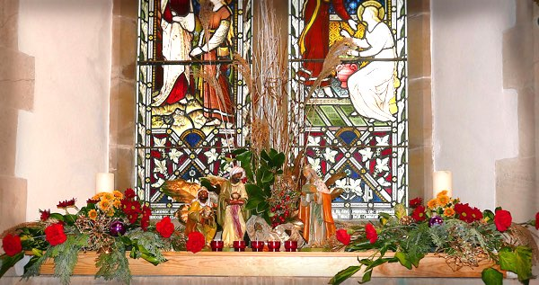

Stewardship at St. Andrew's
Many of you will be very aware that in recent years St Andrew’s had been unable to meet the monetary requirements of the Diocese.
Through the generosity of the congregation and the hard work of our Vicar the situation has improved considerably, but we would like to keep it in a healthy state.

- If you would like to make a regular contribution to St Andrew's then we can offer an Envelope scheme, or payments by Standing Order.
- If you do not want to make a formal commitment at this time, then please make use of the orange envelopes in Church if you are a UK Tax payer.
Please be assured that all financial details are confidential to our Planned Giving Officer.
The attachment below can be downloaded and handed to our Planned Giving Officer at the address below.
St Andrew's Church,
Church Lane,
Ferring,
West Sussex,
BN12 5HN.
Thank you for supporting St Andrew's Church.